Referência funcionalidade por funcionalidade: o que cada tela entrega, de onde vem o dado e como ela funciona por baixo do capô — pra quem já usa o Hub no dia a dia ou vai começar a usar agora. Pra um tour visual rápido pelas telas, veja o demonstrativo do produto.
Visão geral e arquitetura
O Observability Hub observa projetos GCP de fora — a service account de runtime do Hub recebe papéis de leitura num projeto-alvo (BigQuery, Cloud Logging, Cloud Storage) e o Hub nunca instala nada nesse projeto: nenhum agente, VM ou credencial roda do lado de lá. Um mesmo Hub pode observar vários projetos-alvo ao mesmo tempo, cada um liberado individualmente.
Dentro do Hub existem dois níveis de controle de acesso, independentes do IAM do GCP:
- Quem pode entrar — login via Google OAuth, restrito por uma allowlist de domínio/e-mail.
- Quem pode ver qual projeto — mesmo com a SA do Hub tendo acesso técnico a um projeto, um usuário só o enxerga se um admin liberou explicitamente (por e-mail, por grupo do Workspace, ou marcando o projeto como público pra todo mundo). Ver Administração.
Todo domínio abaixo lê dado ao vivo do GCP a cada
consulta (metadado via INFORMATION_SCHEMA, amostra de
dado real quando declarado, ou audit log via Cloud Logging) — o Hub
não replica nem armazena os dados observados, com a única exceção do
cache de audit log de jobs, que alimenta lineage,
mapa de acesso, tabelas órfãs, FinOps e o scanner de Storage (ver
Cache de audit log).
Login e acesso
Autenticação via conta Google (OAuth) — sem senha própria, sem cadastro manual. O Hub decodifica a resposta do Google, confirma que o e-mail está na allowlist configurada e abre uma sessão (cookie assinado). Se o e-mail não estiver na allowlist, o login é recusado antes de qualquer outra tela aparecer.

Catálogo de Dados
Inventário navegável de todos os datasets e tabelas de um projeto BigQuery, sem precisar escrever uma query. A descoberta de região é automática — o backend consulta todas as regiões conhecidas do BigQuery em paralelo e agrega o resultado, então não existe campo de "região" pra preencher em lugar nenhum do produto.
Visão geral do projetonovo
A tela de entrada do Catálogo resume o projeto em três números — total de datasets, total de tabelas e volume ocupado (soma do tamanho de todas as tabelas) — traz a busca de tabela (abaixo) e a grade de datasets, cada card com nº de tabelas, tamanho e a distribuição de SLA de freshness do dataset em três barras (no prazo / atenção / estourado).
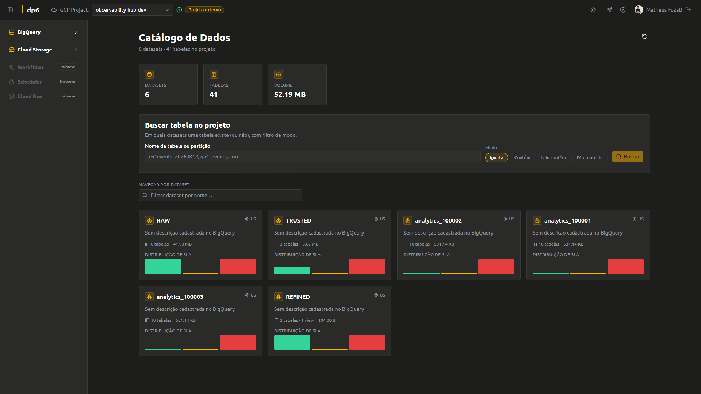
Navegar um dataset
Lista as tabelas de um dataset com tamanho, número de linhas, tipo
(tabela normal, view, tabela externa) e data da última modificação —
direto do INFORMATION_SCHEMA, sem custo de query real.
O cabeçalho traz região, contagem de tabelas/views, tamanho, linhas
e a pior faixa de freshness do dataset; cada linha tem
"Ver partições" e "Analisar", que
abre o módulo de análise da tabela.
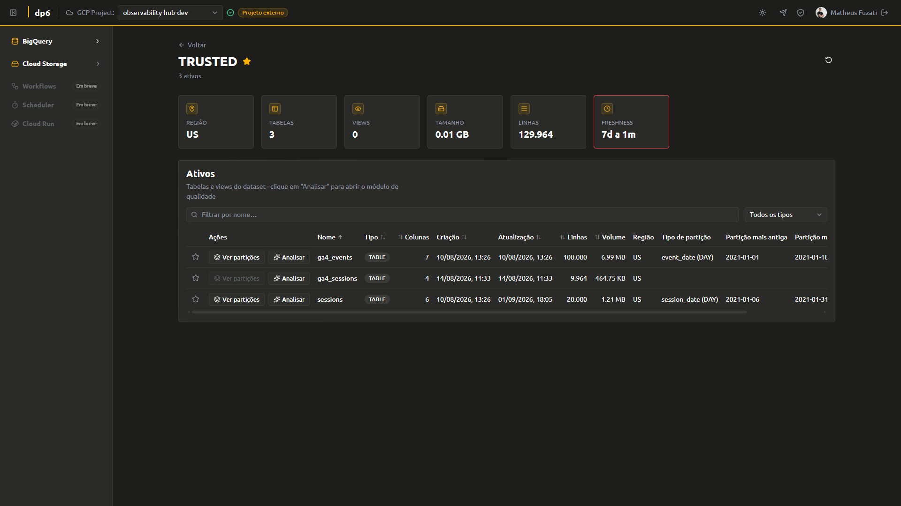
Partições de uma tabela
Pra tabelas particionadas, detalha quantas linhas existem em cada partição — útil pra confirmar se uma carga do dia chegou, ou encontrar uma partição vazia/atrasada sem rodar SQL manualmente.
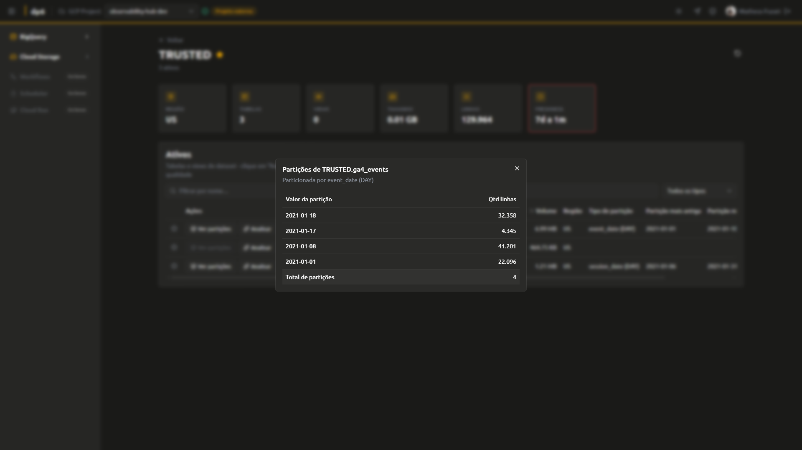
Busca de tabelas
Encontra em quais datasets do projeto uma tabela (ou um padrão de nome) existe — ou confirma que não existe em lugar nenhum. Quatro modos de comparação: igual a, contém, não contém e diferente de. Útil pra checar a cobertura de um pipeline que deveria escrever em vários ambientes/datasets, ou achar quem ainda tem uma tabela que já devia ter sido removida.
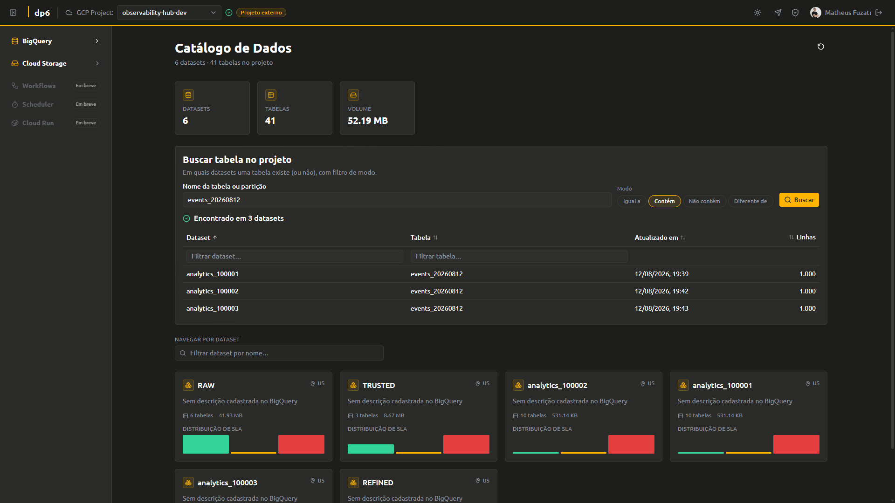
Análise de uma tabelanovo
"Analisar" numa tabela abre uma tela dedicada — não mais um modal — com sete módulos, cada um em sua própria rota (com "Voltar" pro seletor): schema, análise de qualidade, fingerprint de PII, sugestão de tipo de coluna, histórico de profiling, mapa de acesso e lineage. Os detalhes de cada um estão nas seções abaixo.
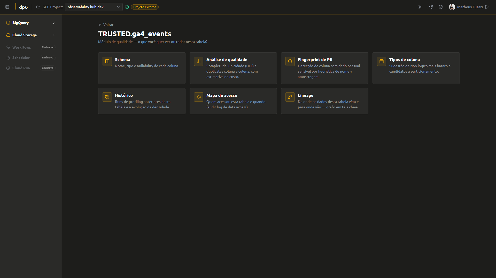
Lineage e tabelas órfãs
Reconstrói a cadeia de dependência entre tabelas a partir dos audit
logs de job do BigQuery (jobservice.jobcompleted) — não
de uma configuração manual de pipeline. Se um job leu a tabela A e
escreveu na tabela B, existe uma aresta A → B no grafo.
Lineage de uma tabela
Grafo dirigido em tela cheia, upstream (de onde vem) e downstream
(pra onde vai), até 15 saltos em cada direção. Buckets do Cloud
Storage também entram como nó quando um job de LOAD
(bucket → tabela) ou EXTRACT (tabela → bucket) aparece na
cadeia. Quando a cadeia atravessa mais de um projeto GCP, cada tabela
aparece identificada como projeto.dataset.tabela. Abaixo
do grafo, três painéis: impacto de mudança de schema
(quantas tabelas/views a jusante quebrariam), fontes
e consumidores diretos.
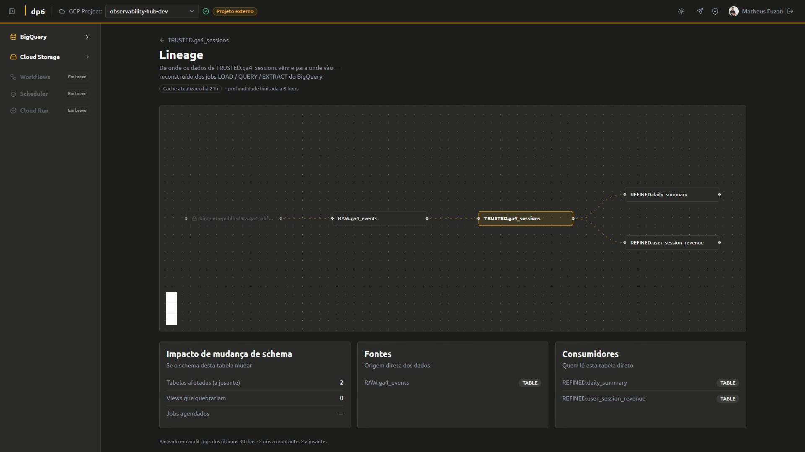
Tabelas sem consumidor (órfãs)
Compara todas as tabelas de um escopo (dataset ou projeto inteiro) contra o conjunto de tabelas que apareceram como lidas em algum job dentro da janela analisada — quem não apareceu é considerada "sem consumidor conhecido", mesmo que tenha sido escrita recentemente. Cada órfã vem com uma estimativa de custo de storage mensal.
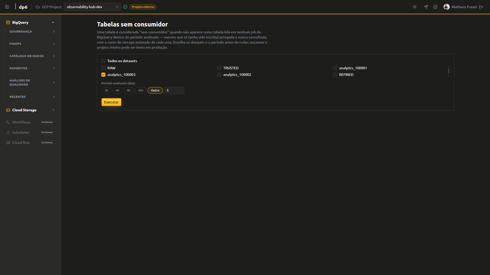
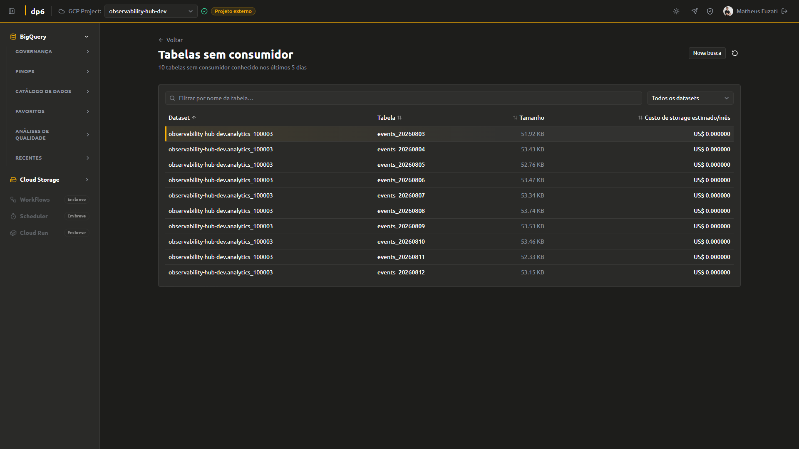
gcloud pronto pra investigar.Fingerprinting de PII
Detecta colunas com provável dado pessoal combinando duas camadas:
heurística de nome de coluna (grátis, não toca dado real) e amostragem
real de valores via TABLESAMPLE SYSTEM, contando
correspondências de regex por padrão (e-mail, CPF, telefone, etc.).
Garantia de privacidade estrutural: o casamento de
padrão roda inteiramente dentro do BigQuery, via
REGEXP_CONTAINS + COUNTIF — a API do Hub
nunca recebe, processa ou loga um valor de coluna real, só contagens e
proporções agregadas. O dado bruto nunca sai do BigQuery.
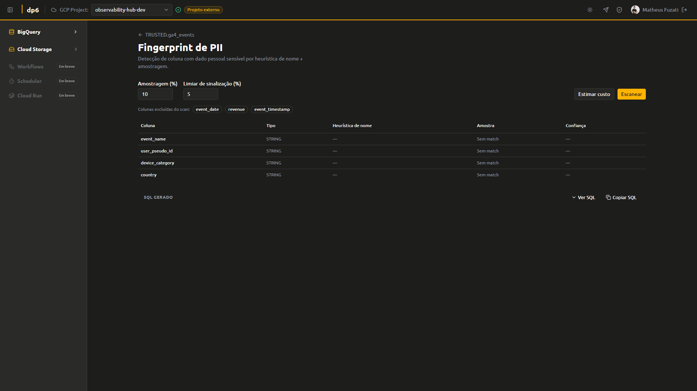
Mapa de acesso
Responde "quem tocou nessa tabela recentemente" — mesma fonte de dado do lineage (audit log de job), ângulo diferente: em vez de reconstruir de onde os dados vêm, agrega por usuário/service account que leu ou escreveu na tabela, com contagem e data do último acesso.
A própria service account de runtime do Hub é excluída da agregação — rodar profiling ou PII scan pela interface não deveria contar como "um consumidor externo acessou essa tabela".
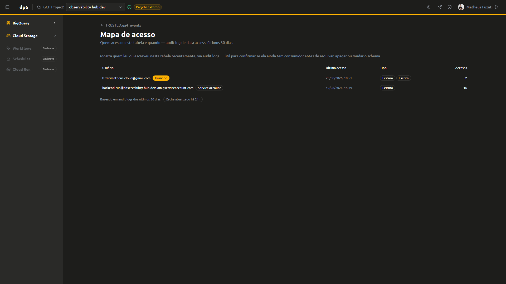
Qualidade de dados e schema drift
Análise estatística configurável, coluna a coluna, com amostragem e estimativa de custo antes de rodar — nunca surpresa na fatura do BigQuery.
Schema
Nome, tipo e nullability de cada coluna, direto do
INFORMATION_SCHEMA — grátis, sem amostrar dado. As
colunas de partição e de cluster vêm marcadas.
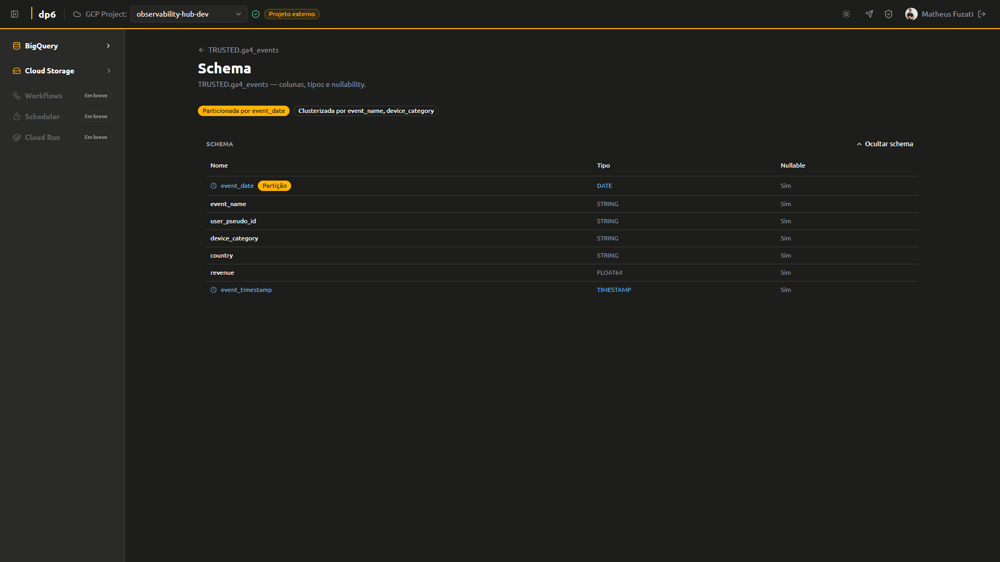
Configurar e rodar profiling
Antes de executar, escolhe amostragem, método de unicidade (exato ou
aproximado por HLL) e coluna de data. O Hub então mostra
o SQL que vai rodar e estima bytes processados / custo em US$ — o
usuário decide se vale a pena antes de gastar a query.
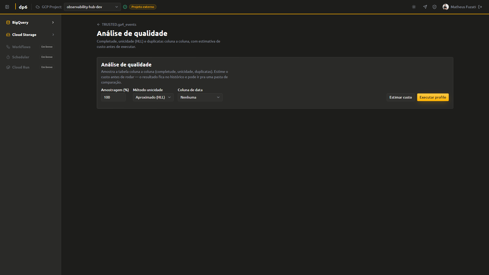
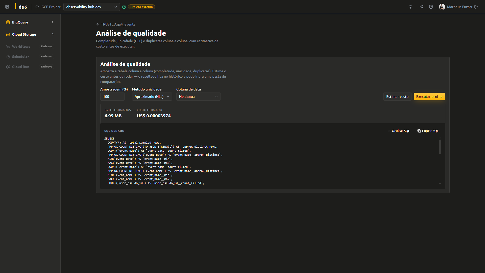
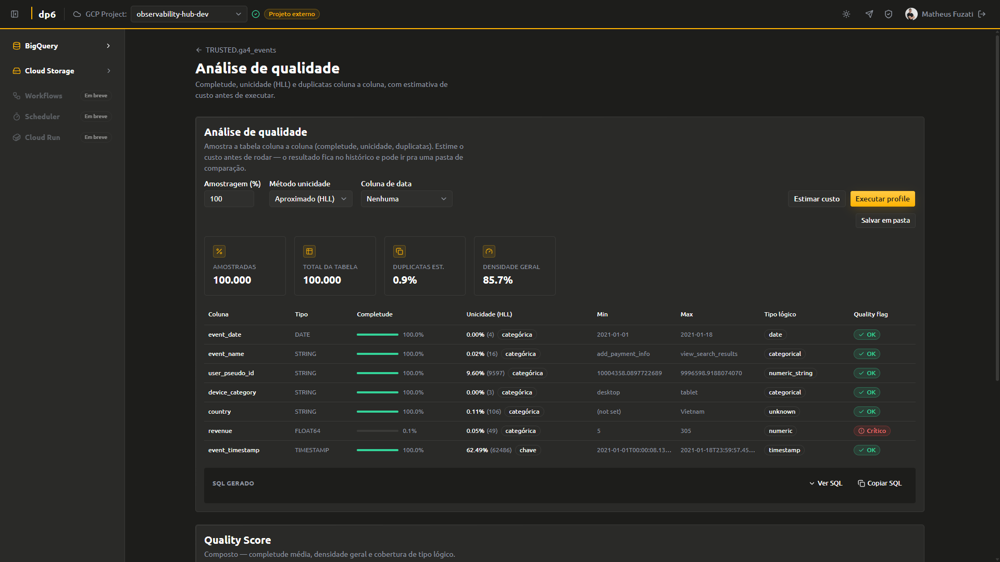
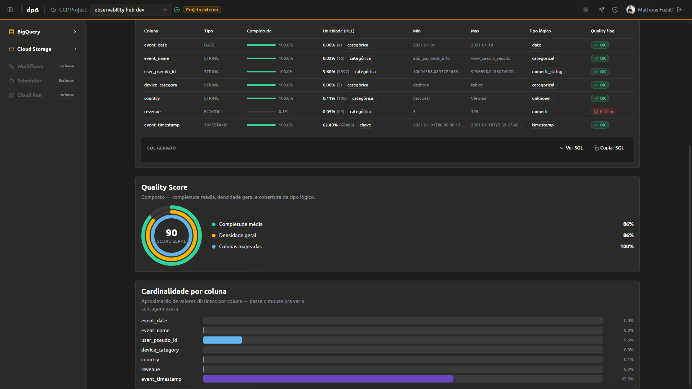
Histórico e pastas de comparação
Cada execução de profiling fica salva, permitindo acompanhar densidade e duplicatas ao longo do tempo. Resultados também podem ser salvos em pastas nomeadas pra comparar execuções lado a lado (ex: antes/depois de uma mudança de pipeline, ou métodos de unicidade diferentes) — a pasta guarda uma cópia do resultado no momento em que foi salva, então uma mudança futura na lógica de profiling não altera retroativamente o que já foi arquivado.
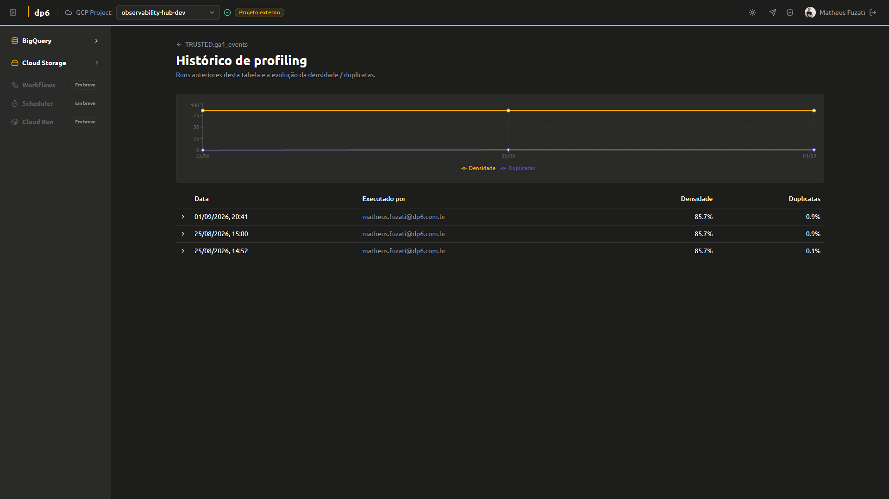
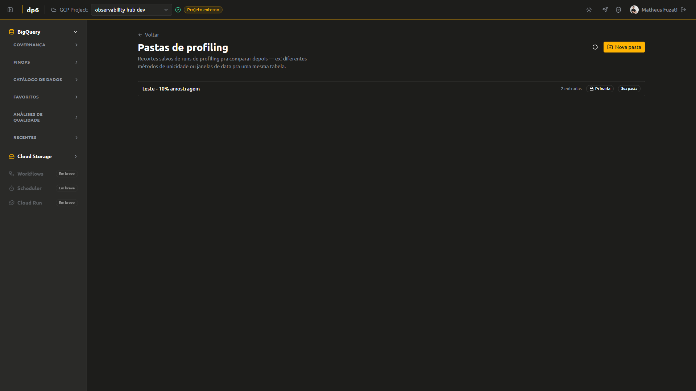
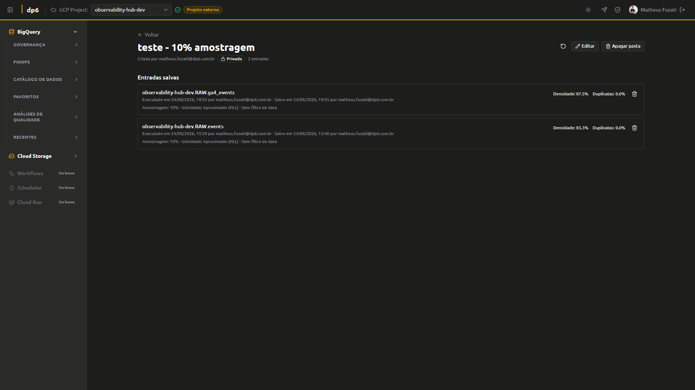
Freshness com SLA
Classifica cada tabela contra janelas de SLA fixas, a partir do metadado de última modificação do BigQuery — sem precisar declarar manualmente qual é o SLA esperado de cada tabela. É uma das duas frentes da overview de Governança (a outra é tabelas sem consumidor).
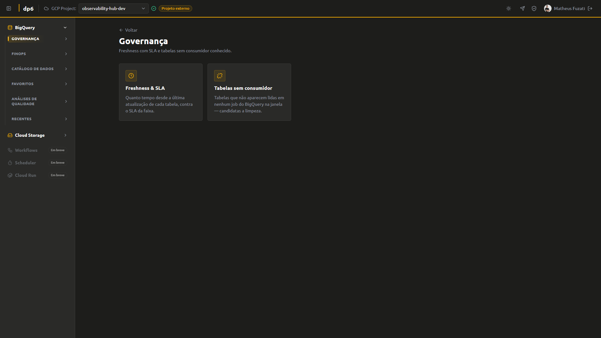
- ok — atualizada há até 12h
- warning_12_24 — 12h a 24h
- warning_24_48 — 24h a 48h
- faixas adicionais até 7 dias / 1 mês, pra tabelas com cadência esperada mais espaçada
A distribuição de cada dataset aparece em três barras verticais — no prazo (verde), atenção (amarelo) e estourado (vermelho), colapsando as seis faixas por severidade; a altura de cada barra é proporcional à contagem, e as três estão sempre visíveis (altura mínima quando zero) pra a leitura ser consistente entre linhas.
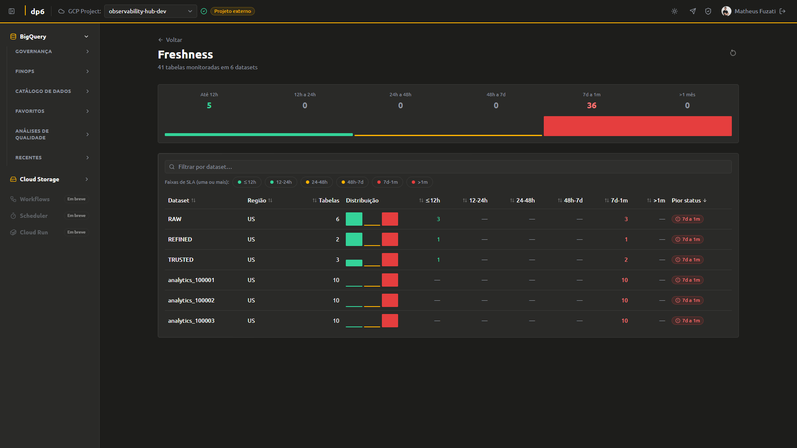
FinOps
Custo e desperdício de BigQuery, sem depender do Cloud Billing Export — tudo derivado de audit logs de job (bytes cobrados por query) e metadado de tabela, porque Billing Export só quebra custo por projeto+SKU, nunca por dataset/tabela.
Visão geralnovo
A tela de entrada de FinOps reúne: os big numbers (gasto do período, meta mensal, projeção, nº de tabelas de baixo score); o gráfico de custo ao longo do período — barras por período + linha acumulada, com troca de granularidade (dia/mês) e de tipo (tudo / query / storage), e a meta de projeto como linha de referência; o painel de eficiência de custo (um score por tabela e o do projeto) e o ranking de Top ofensores, onde clicar numa linha abre a decomposição do score (particionamento, utilização, eficiência de scan); e os cards de atalho pra Scanner, Budget e Configurar budget.
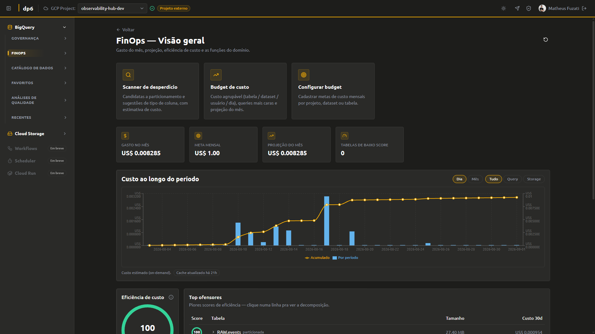
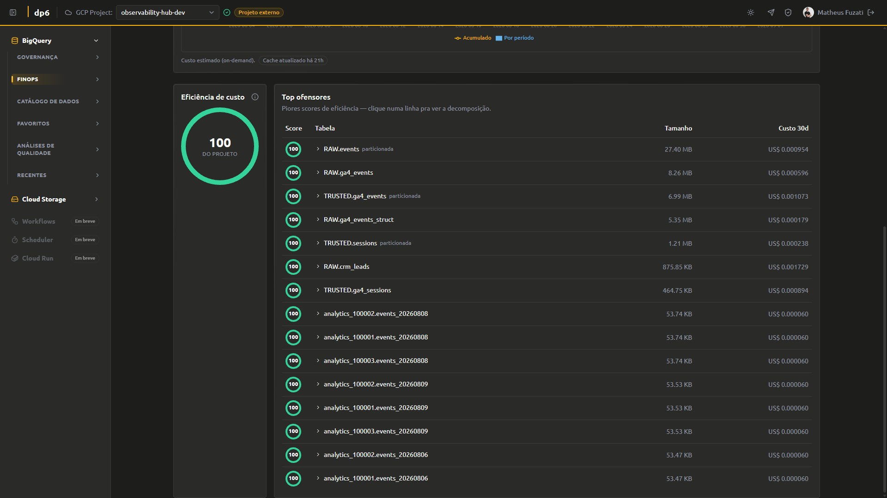
Scanner de desperdício
Overview de duas frentes — candidatas a particionamento e sugestão de tipo de coluna, cada uma em sua própria sub-rota. Tabelas sem uso ficaram só em Governança → Tabelas sem consumidor, pra não duplicar a mesma informação em dois lugares.
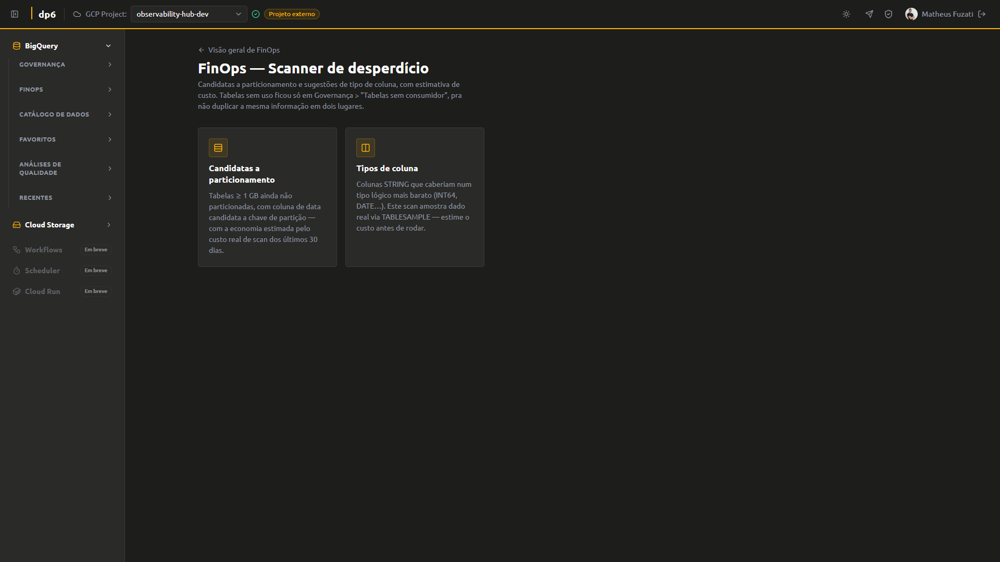
Candidatas a particionamento
Sinaliza tabelas ≥ 1 GB, sem partição, com uma coluna de
DATE/DATETIME/TIMESTAMP
candidata a chave de partição. A economia estimada (quando exibida)
usa o custo real observado nos últimos 30 dias de jobs que
referenciaram a tabela — sem atividade recente, a tabela ainda
aparece como candidata, só sem número de economia.
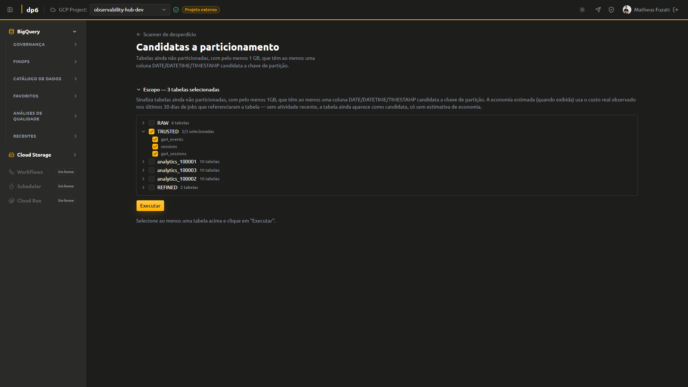
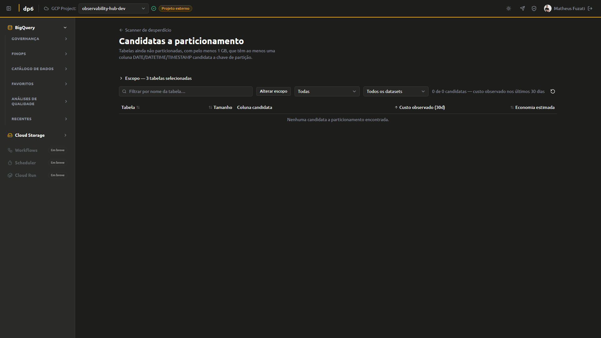
Sugestão de tipo de coluna
Amostra dados reais via TABLESAMPLE pra sugerir tipos
mais baratos (ex: STRING guardando só números vira
candidata a INT64/FLOAT64). Diferente das
outras telas do scanner, esta tem custo de BigQuery —
escopo + estimativa de custo antes de escanear.
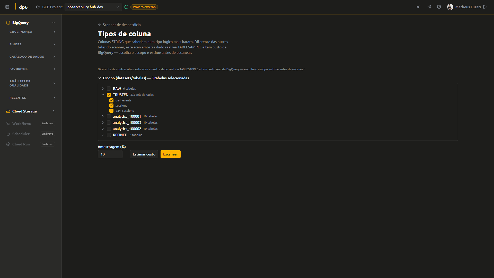
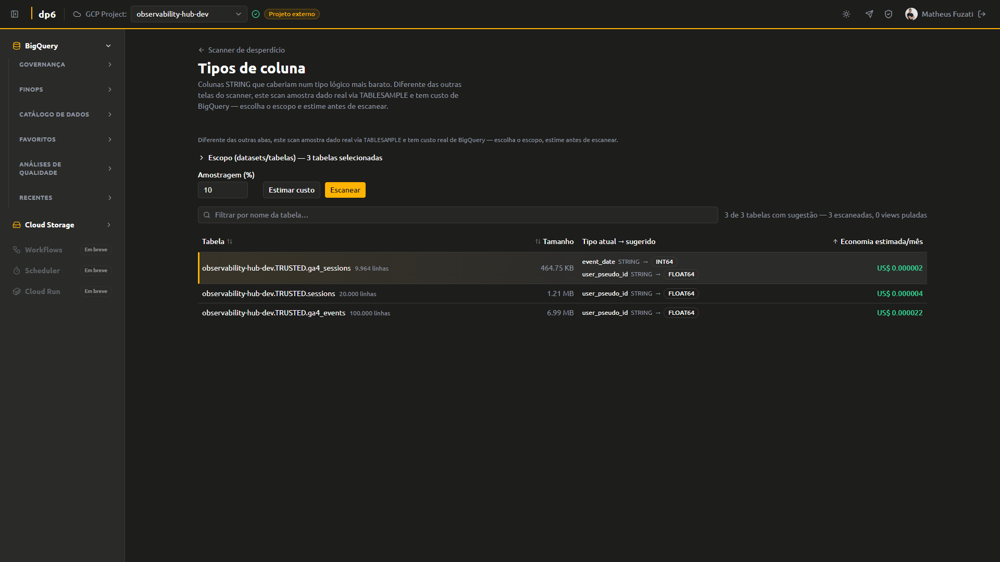
Budget de custo
Estima o custo de um período via audit log de jobs (bytes cobrados) + preço público on-demand — sem depender do Cloud Billing Export. A janela é escolhível: presets de 7, 15 e 30 dias ou um valor livre, com teto de 31 dias (retenção do cache de audit log). A projeção é um run-rate de 30 dias (média diária da janela × 30), não "o resto do mês". O resultado traz custo até agora, média diária, projeção e a janela analisada, mais o custo quebrado por tabela / dataset / usuário / dia / mês / ano e as queries mais caras.
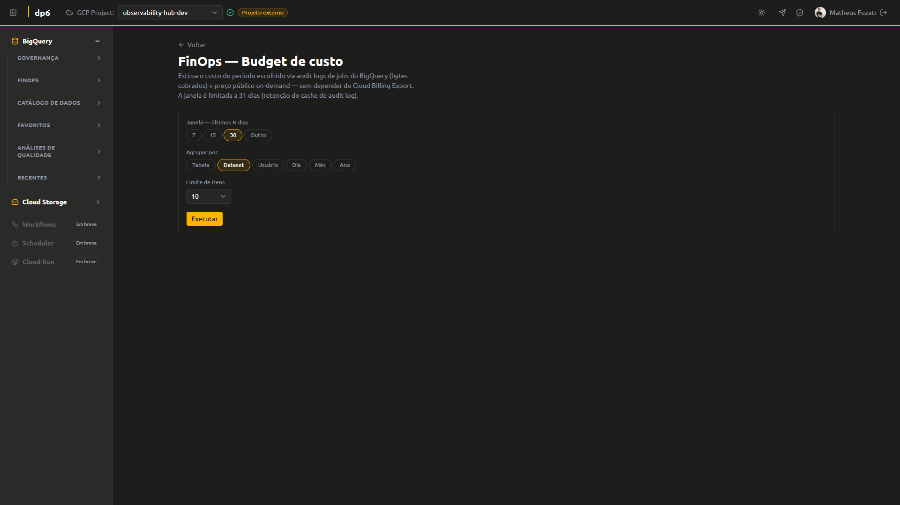
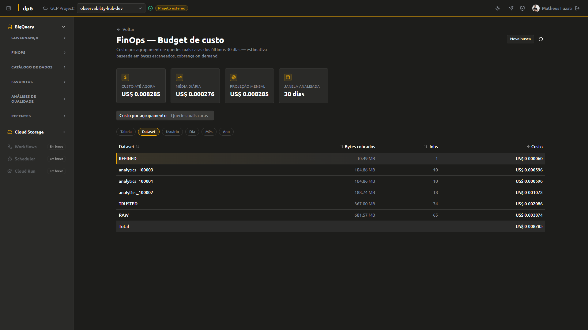
Metas de budgetnovo — um diálogo permite cadastrar metas de custo mensais por projeto, dataset ou tabela. Cada usuário tem as suas (não são compartilhadas); a meta de escopo "projeto" vira a linha de referência no gráfico de custo da visão geral.
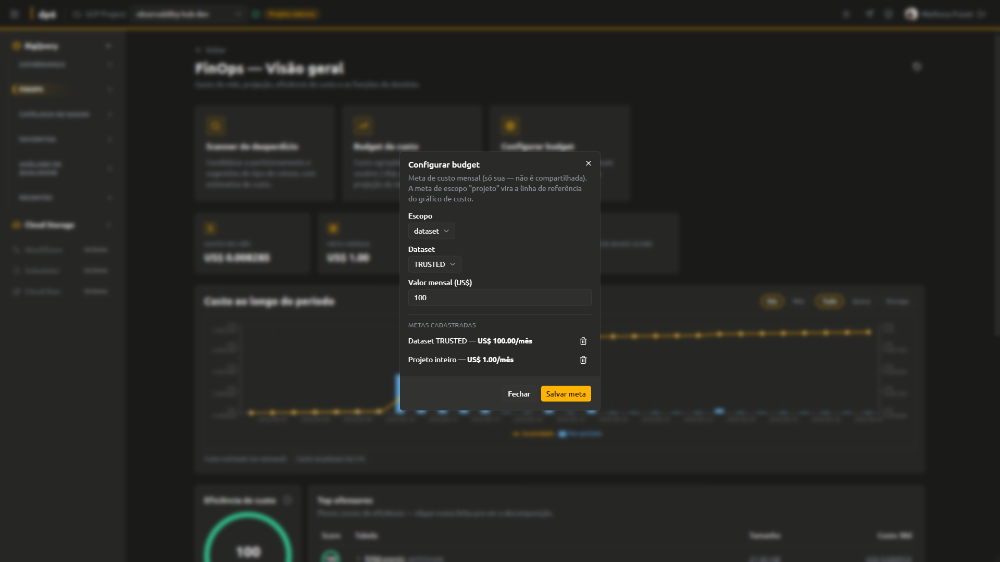
Favoritos e Recentesnovo
Datasets e tabelas marcados com estrela, e o histórico de tabelas abertas, agora com tela própria além do acesso rápido inline na sidebar. As duas são escopadas ao projeto selecionado e por usuário.
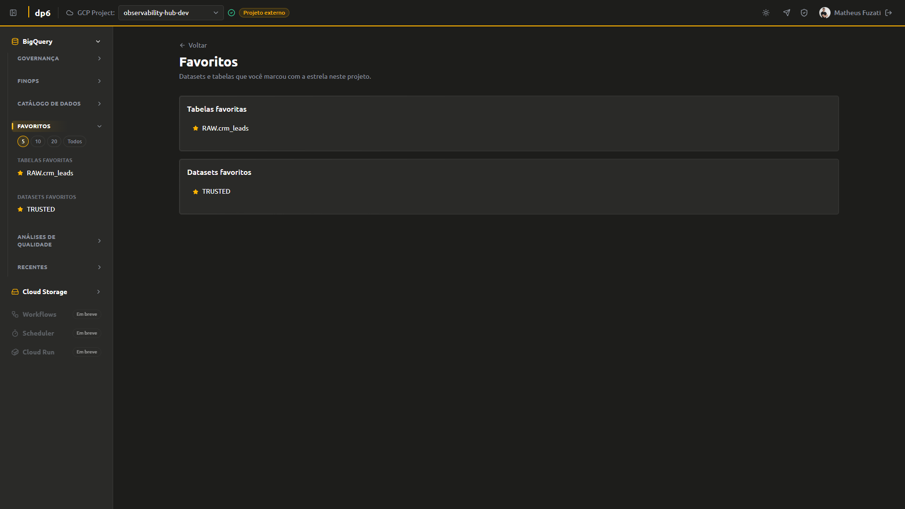
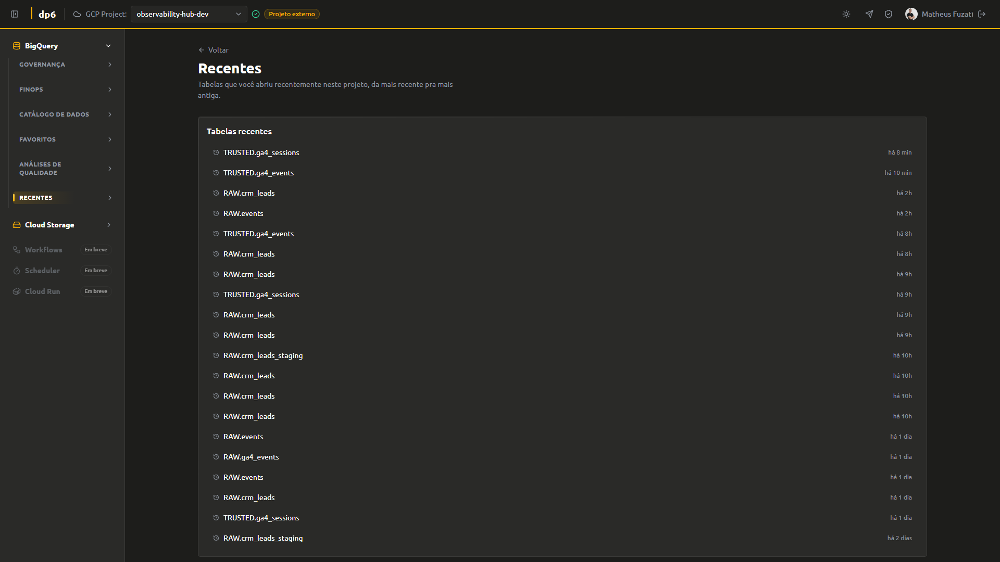
Catálogo e scanner de buckets
Extensão do Hub pra além do BigQuery — mesma governança (catálogo +
scanner de desperdício), agora pra buckets do Cloud Storage. Buckets
também entram como nó no grafo de lineage quando participam de um
job de LOAD/EXTRACT.
Visão geralnovo
Ao entrar em Cloud Storage, uma overview de dois cards leva a Buckets (catálogo) e ao Scanner de desperdício.
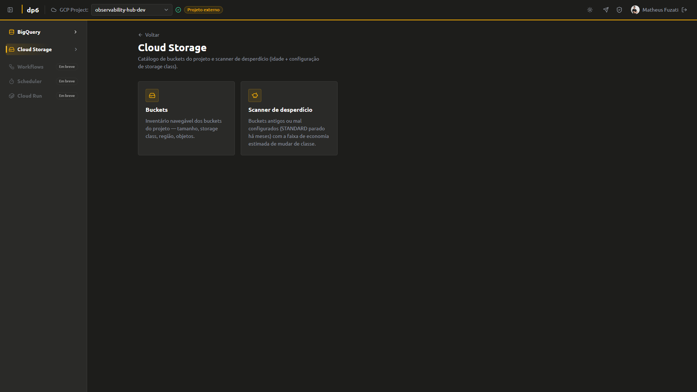
Catálogo de buckets
Storage class, tamanho, quantidade de objetos, região e regras de lifecycle já configuradas em cada bucket do projeto. Clicar num bucket abre a navegação pasta a pasta, com tamanho e storage class de cada objeto.
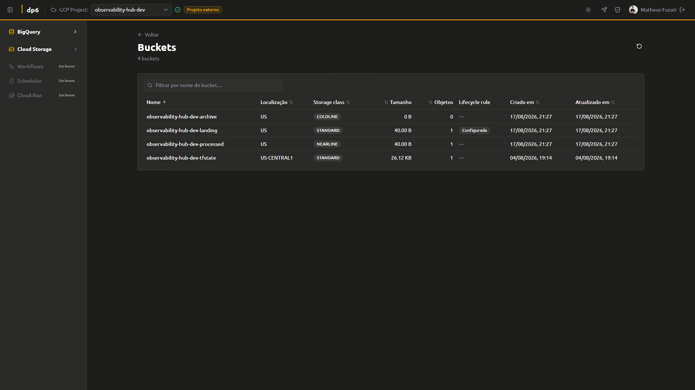
Scanner de desperdício
Sinaliza objetos em storage class STANDARD parados há
muito tempo, candidatos a uma classe mais barata (Nearline, Coldline
ou Archive). O nível de confiança da recomendação muda conforme o
audit log de leitura de objeto (DATA_READ) esteja
habilitado no projeto: "leitura confirmada" quando está, "sem leitura
confirmada" (só idade do objeto + config, sem confirmar se alguém
ainda lê) quando não — a checagem degrada graciosamente, sem bloquear
o resultado.
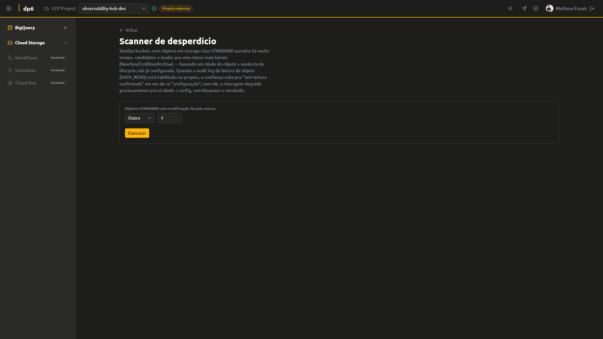
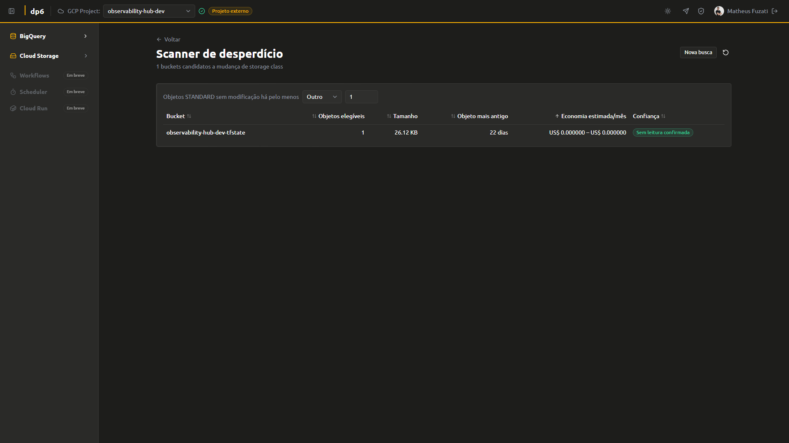
Solicitar acesso a um projeto
Se você digita um project_id que o Hub não libera pra
você, a própria tela já oferece o próximo passo — sem precisar abrir
um ticket ou mandar mensagem pro time.
Projeto já onboardado, só falta liberar pra mim
Quando o projeto já está pronto no Hub e só falta você ter permissão (caso mais comum), o erro mostra o botão "Solicitar acesso" — abre um pedido que entra direto na fila de um admin aprovar ou negar, com confirmação imediata na tela (sem e-mail nem ticket à parte).
Projeto ainda não incluído no Hub
Se o erro for de acesso negado na SA do Hub (o projeto nunca foi liberado pra ninguém) ou de projeto inexistente/nome incorreto, o mesmo fluxo oferece "Solicitar inclusão no Hub" em vez de "Solicitar acesso" — o Hub não consegue distinguir com certeza os dois casos do lado do usuário, então deixa o admin investigar qual é qual ao revisar o pedido. Aprovar um pedido desses registra o projeto no Hub e libera quem pediu, num clique só — ver Administração → Solicitações.
Administração
Quem é admin do Hub, quais projetos cada usuário/grupo pode ver, fila de solicitações, caches e visibilidade de uso — tudo separado do login (que continua controlado só pela allowlist do OAuth).
Por usuário
Controla quem é administrador do Hub e a quais projetos GCP cada
usuário tem acesso, num só lugar. "*" na lista de
projetos libera qualquer projeto que a service account do Hub
alcançar.
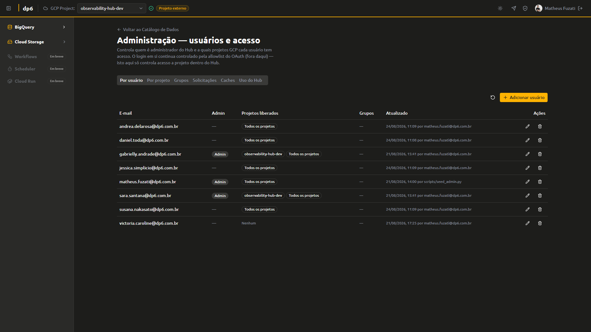
Por projeto
Visão inversa: escolhe um projeto e vê quem tem acesso a ele — inclui
liberar o projeto pra todo mundo de uma vez ("liberado a todos") e
apagar o registro do projeto (isso só o tira da lista "Por projeto";
acessos já concedidos individualmente continuam valendo até serem
revogados à parte). O botão "Verificar checklist"
testa, na hora, se a service account do Hub consegue ler BigQuery,
Cloud Logging e Cloud Storage daquele projeto — sem abrir o Console do
GCP. É "best-effort": ele tenta a operação real e reporta
sucesso/falha, mas não confirma sozinho a role
logging.privateLogViewer (que falha silenciosamente —
devolve sempre vazio) nem se os Data Access audit logs estão
habilitados (o checklist já traz o comando gcloud pronto
pra isso).
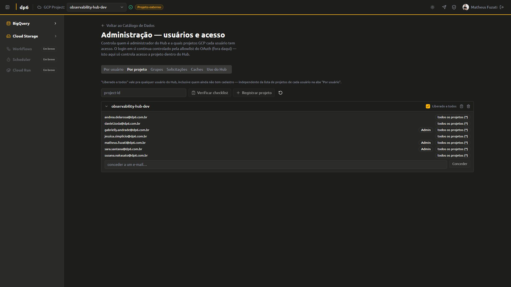
Grupos
Grupos do Google Workspace integrados via domain-wide delegation — os membros reais são lidos direto do Workspace a cada consulta (cache curto), sem manter uma lista manual duplicada dentro do Hub. Cada membro herda os projetos liberados do grupo, somando com o que já tem individualmente.
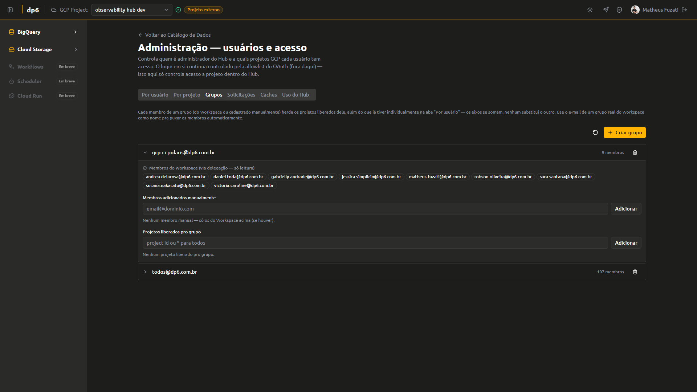
Solicitações de acesso
Fila de pedidos — quem pediu, quando, tipo (acesso a projeto vs. inclusão de projeto novo), status (pendente/aprovada/ negada) e quem resolveu. Aprovar um pedido de inclusão registra o projeto automaticamente antes de liberar o solicitante, então vale rodar o checklist daquele projeto antes de aprovar.
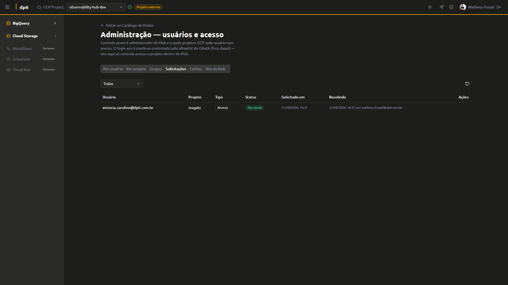
Uso do Hub
Visibilidade de adoção sem sair do próprio Hub, com cada seção num bloco próprio: acessos e usuários únicos (hoje/semana/mês) num gráfico de coluna + linha configurável; log de logins recentes; funil de retenção (quem só loga vs. quem de fato usa alguma funcionalidade) em barras proporcionais; mapa de calor de dia × hora; bases mais favoritadas; atividade de profiling; demanda por acesso a projeto (quais são mais pedidos); e navegação (tabelas mais vistas, buscas mais frequentes, scans de PII).
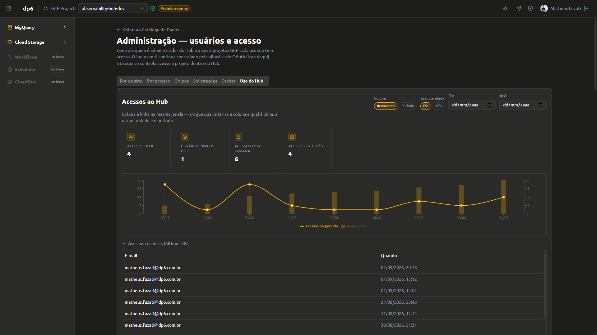
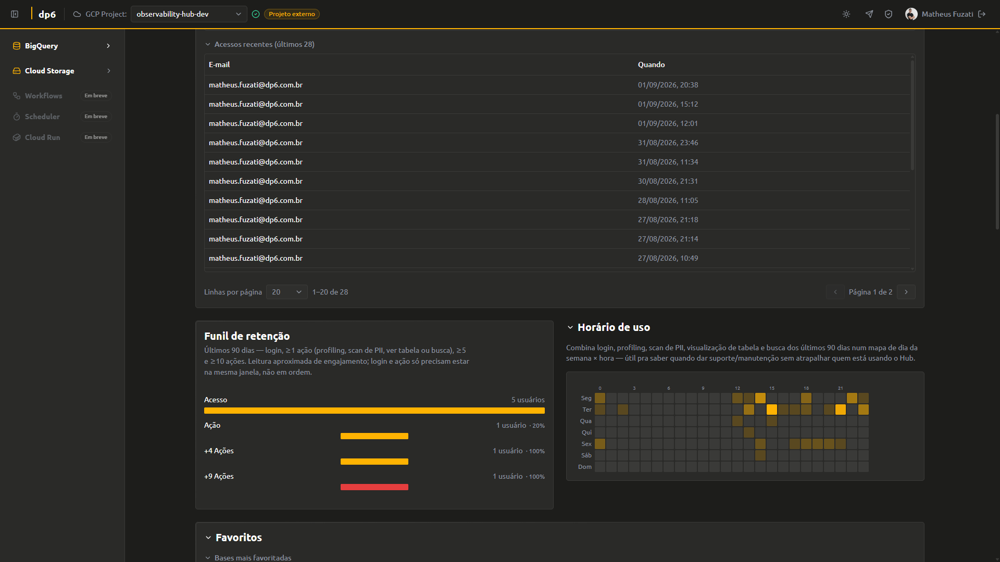
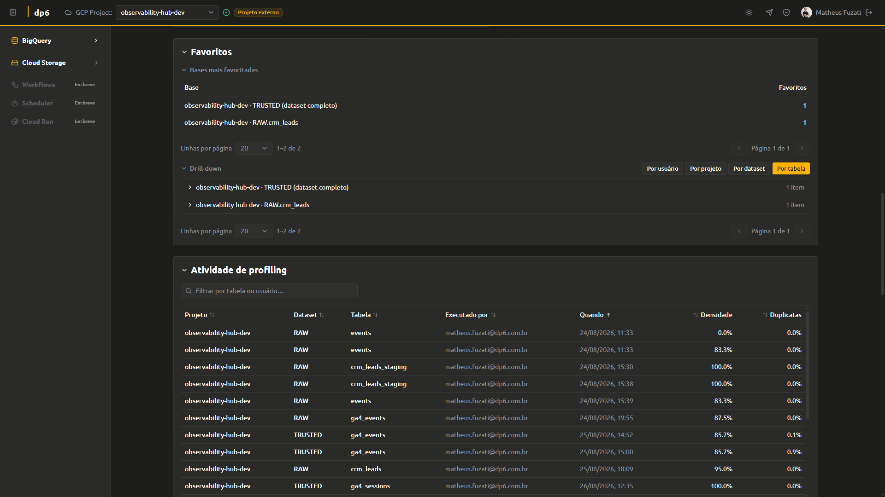
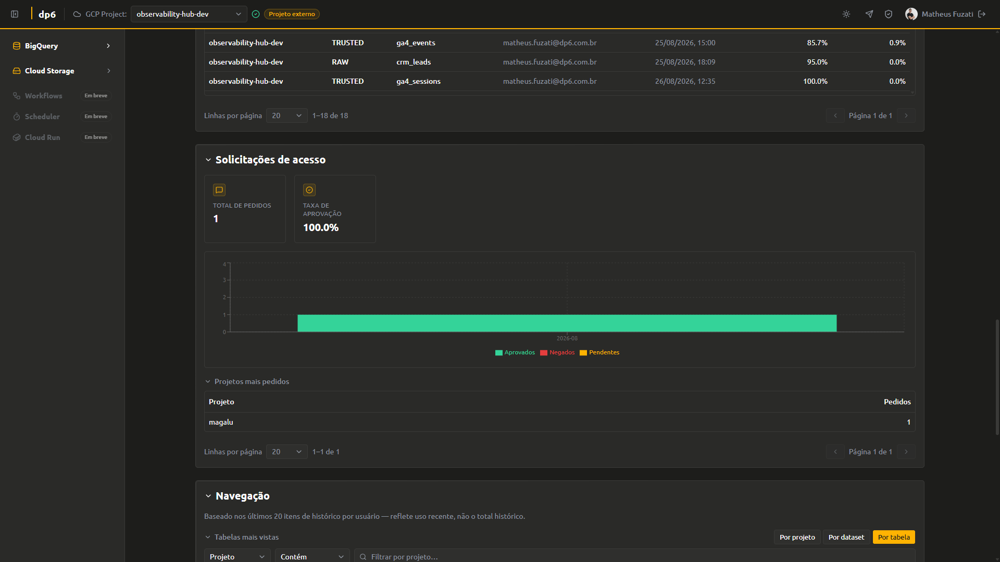
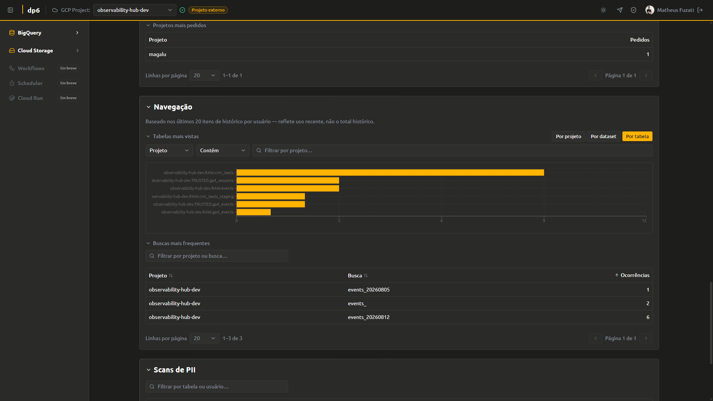
Caches
Aba de acompanhamento do cache de audit log — card de resumo da execução, botão "Atualizar agora" com seletor de projetos e opção "forçar completo", histórico de execuções filtrável e freshness por projeto. Detalhado em Cache de audit log.
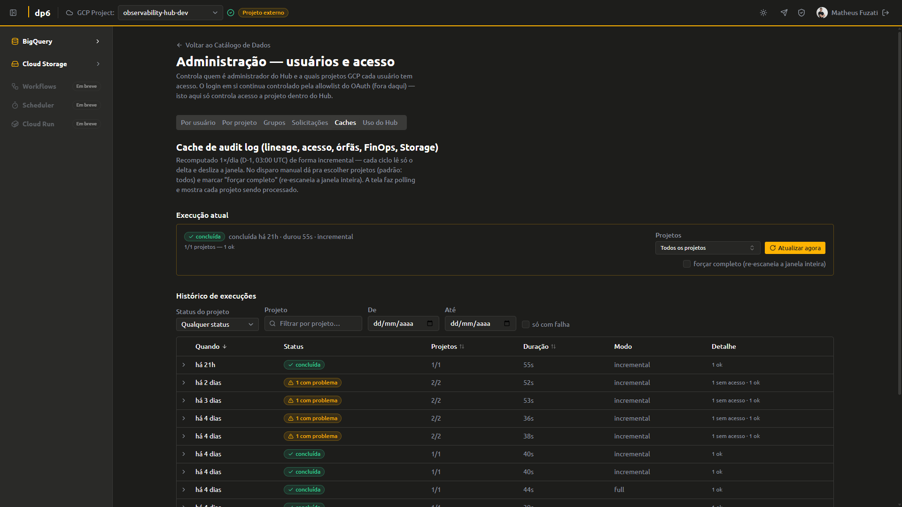
Cache de audit log
Lineage, mapa de acesso, tabelas órfãs, FinOps (budget, visão geral e
scanner de desperdício) e o scanner de uso de Storage dependem de
escanear o audit log de jobs do BigQuery no Cloud Logging — em
projetos com muito volume, fazer isso a cada clique é lento, consome a
cota do Cloud Logging e, em casos extremos, chegava a falhar
(Failed to fetch). Essas telas leem um cache
pré-computado por um job, não mais um scan ao vivo a cada consulta.
Job incremental diário
- Um job roda 1× por dia (madrugada, horário UTC) e atualiza o cache de todos os projetos conhecidos pelo Hub.
- Cada execução é incremental: lê só o que entrou no audit log desde a última execução bem-sucedida, junta com o que já estava em cache e descarta o que saiu da janela (31 dias pros domínios de BigQuery, 90 dias pra Storage). Isso derruba a leitura diária de ~15 páginas por projeto pra ~1 — muito mais leve na cota.
- O scan completo da janela inteira só roda na primeira execução de um projeto, ou quando um admin pede explicitamente ("forçar completo", abaixo).
Aba "Caches" em Administração
Uma aba dedicada em Administração dá visibilidade granular do cache, sem tocar o Cloud Logging:
- Card de resumo da execução atual ou mais recente — status, quantos projetos já foram processados, duração, se foi incremental ou completo, e a lista dos projetos que deram problema (sem acesso, cota estourada, erro).
- "Atualizar agora" dispara o job sob demanda, sem
esperar o ciclo diário. Ao lado:
- Seletor de projetos — escolhe rodar só um subconjunto (padrão: todos). Útil pra re-rodar um projeto que falhou ou que acabou de ser onboardado, sem varrer o resto.
- "Forçar completo" — ignora o delta incremental e re-escaneia a janela inteira. Use quando desconfiar que o cache incremental está defasado.
- Histórico de execuções — tabela paginada e filtrável (por status, projeto, período, "só com falha"); cada linha expande pro detalhe por projeto (modo, tamanho do delta, contagens por domínio).
- Freshness por projeto × domínio — quando cada cache foi gerado, colorido por idade, distinguindo "nunca rodou" de uma janela já preenchida.
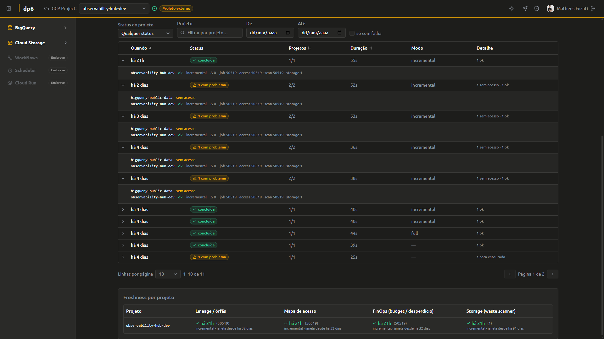